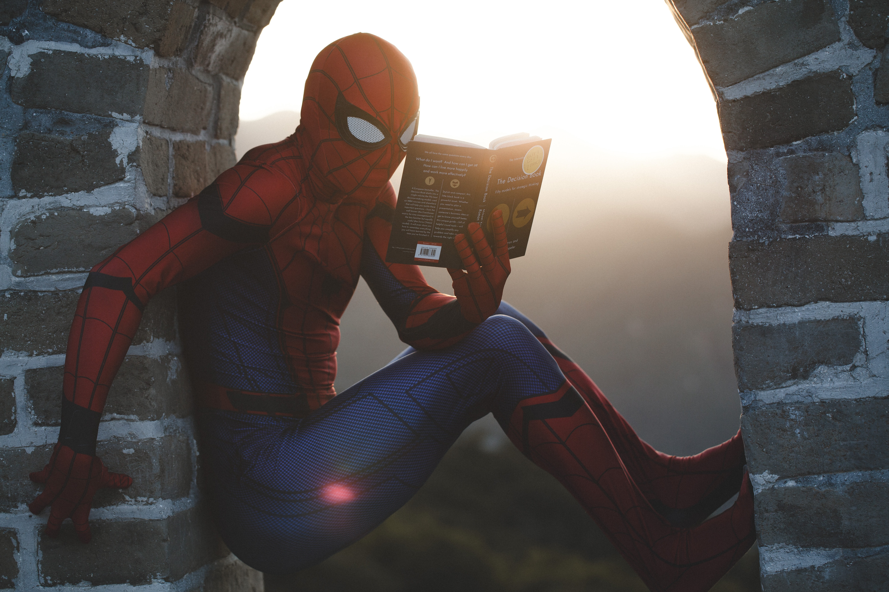

IN THE NEWS
The Reader’s Nook is inspiring readers across the country, helping them discover the joy of reading and learning. Take a look at some stories from our contributors and our readers, as well as some news media coverage and our social media presence.
The LA Times: The Reader's Nook Is Spreading the Joy of Reading Across the US
"The Reader's Nook does the work.
They want everyone to experience the imagination, the education,
the pleasure that reading brings, and the effect they've had on
young people is incredible"
Zadie Smith, author of
White Teeth

The Huffington Post: Various LGBT Centers Across the Country Celebrate The Reader's Nook
The Chicago Tribune: National Book Collection Organization Provides Books to Local Chicago Elementary Schools
"The Reader's Nook is awesome!"
Phoebe Waller-Bridge, writer of Fleabag

The New York Times: High School Teachers and Students Donate 1,000 Books to The Reader's Nook
Buzzfeed: This Thank-You Video to The Reader's Nookfrom an Iowa High School Will Have You ~Sobbing~
"With reading in your tool belt, you
can do anything. With The Reader's Nook, you can read anything.
It allows everyone to have the power to interrogate, to learn,
to imagine, and to live."
Mark O’Connell, author
of To Be a Machine
TESTIMONIALS
Maya Harris
“I actually found my favorite book from The Reader’s Nook.
It’s called Life As We Knew It, and it’s about a family struggling
to survive after the moon is hit by an asteroid, causing its orbit
to move closer to Earth... After reading it, I wanted to learn more
about astronomy, and to see how accurate the book was in terms of
its destruction and scientific elements… I would say that it was
what inspired me to want to become an astronomer”
Liam Boise
“The Reader’s Nook has become extremely popular at my
school, which is surprising, since it’s a high school and all
these teens are always on their phones… People love to talk about
what books they are reading, and just engage with the text and the
literature… Our school doesn’t have access to a lot of books or
funding, so The Reader’s Nook is an extremely important part
of our lives.”